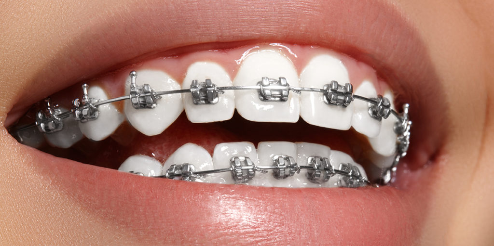

Nuestros Tratamientos
-
Blanqueamiento Dental

En los tiempos que corren, la sociedad cada vez demanda más una buena presencia. Mejorar el aspecto de nuestra sonrisa nos hará ganar en seguridad y en autoestima, tanto en nuestra faceta laboral como personal. Entre los tratamientos estéticos más solicitados, se encuentra el blanqueamiento dental. Gracias a él, podremos reducir varios tonos el color original de nuestros dientes, convirtiendo nuestra sonrisa en una más blanca y brillante.
Confía en nosotros para lograr una sonrisa más brillante y radiante con nuestro tratamiento de blanqueamiento dental. Mejora tu confianza y autoestima con una sonrisa más blanca.
-
Ortodoncia
Mejora la alineación de tus dientes y la mordida con nuestros tratamientos de ortodoncia. Ofrecemos opciones de brackets tradicionales e invisibles.
-
Implantes Dentales

Recupera dientes perdidos de forma permanente con nuestros implantes dentales. Restauramos tu sonrisa de manera natural y funcional.
-
Extracciones

Realizamos extracciones dentales con cuidado y precisión, garantizando una experiencia sin dolor y una recuperación rápida.
-
Odontología Pediátrica

Cuidamos la salud dental de los más pequeños. Nuestros tratamientos pediátricos están diseñados para brindar atención amigable y efectiva a los niños.